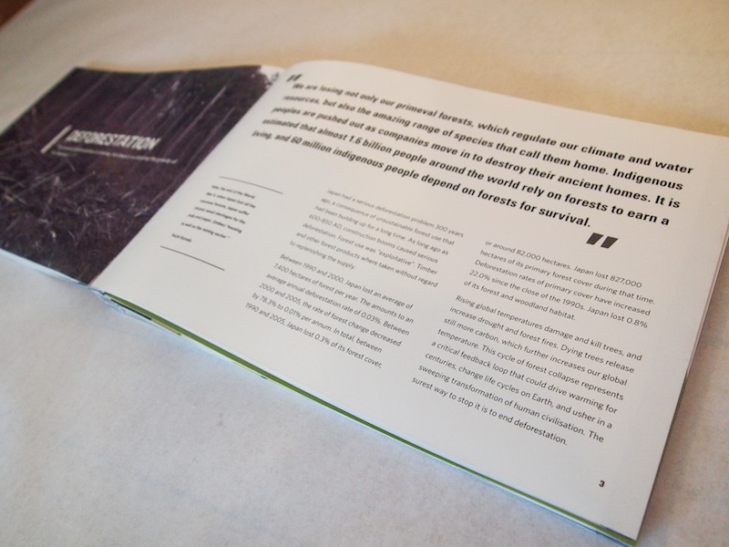
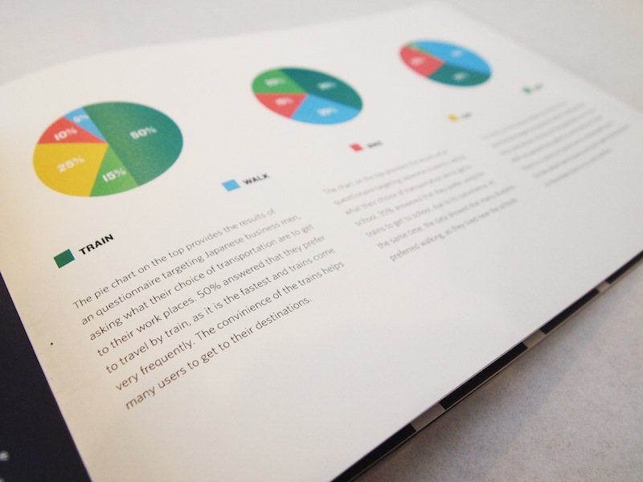
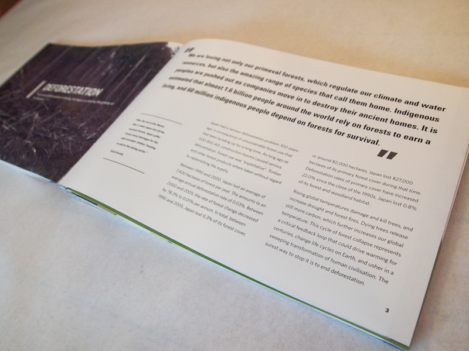
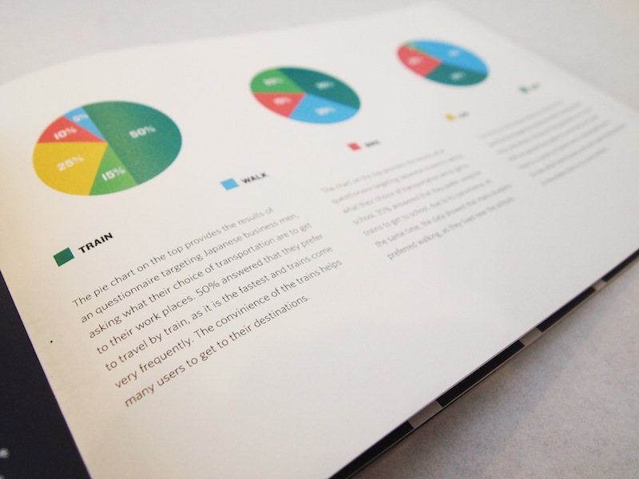

10 Problems About Climate Change
A brochure about the ten problems that Japan is affected from climate change. The book consists of a combination of illustrations, infographics and photography. The book was based on a three column grid, where imagery and text creates a blend. Book was bound in an accordion style.